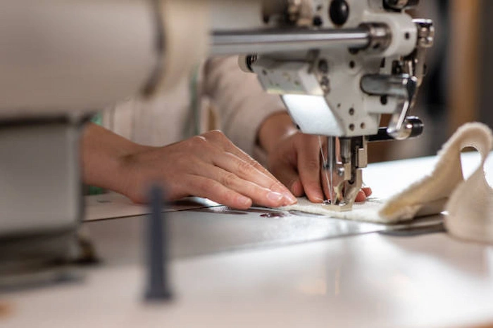
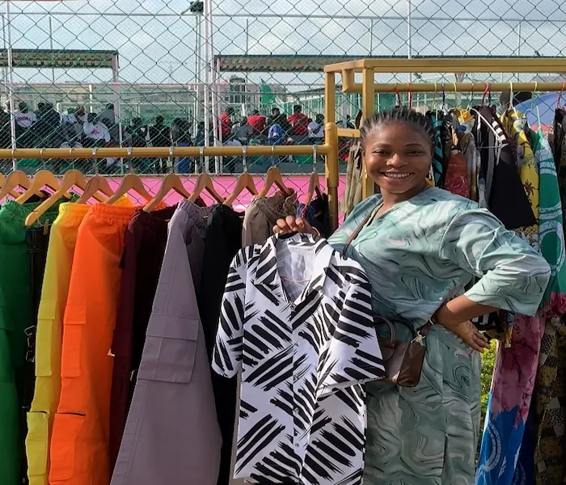

The Art of Restraint
At NGLANE, we believe that true luxury lies in the details that often go unnoticed. Our approach to modern fashion isn’t about chasing fleeting trends; it’s about perfecting the pieces that define a wardrobe. By stripping away the unnecessary, we reveal the soul of a garment—focusing on premium textiles, architectural silhouettes, and enduring quality.


A Subtle Heritage
NGLANE was born from a desire to redefine the modern wardrobe through the lens of clarity. Our work is a quiet dialogue with African identity. Rather than relying on overt prints, we draw inspiration from structural silhouettes, artisanal textures, and the rhythmic craftsmanship inherent in our culture.
It is a celebration of "the hidden detail"—the way a seam is finished or how a fabric weight honors a specific climate. We create for the global citizen who carries their heritage as a subtle, sophisticated pulse in everything they do.
Our Mission
Our mission is to redefine modern fashion through restraint, intention, and longevity. At NGLANE, we design garments that resist disposability—pieces created not for a single season, but for a lifetime of wear. We believe clothing should earn its place in a wardrobe through thoughtful construction, refined silhouettes, and materials chosen for their integrity.
Rooted in African creativity and shaped for a global audience, our mission is to prove that luxury does not need excess to be powerful. By focusing on clarity rather than noise, and purpose rather than trend, we aim to create clothing that feels personal, timeless, and quietly confident.
Our Vision
We envision a future where wardrobes are smaller, smarter, and more meaningful—where every piece serves a purpose and tells a story of thoughtful design. NGLANE exists to challenge the fast-fashion mindset by offering an alternative built on patience, craftsmanship, and respect for the wearer.
As we grow, our vision remains clear: to become a globally recognized brand that represents refined African minimalism—subtle in expression, confident in form, and uncompromising in quality.
Materials with Integrity
We select textiles that age with grace and feel like a second skin, prioritizing durability and breathability.
Purposeful Design
Every pocket, pleat, and proportion is tested for real-world functionality and architectural form.
Quiet Luxury
We honor the art of making, focusing on subtle craftsmanship rather than overt expression.
The Enduring Standard
We don't design for seasons; we design for decades. Our pieces are built to be staples for years to come.